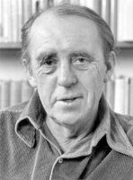

(1917 – 1985)

Heinrich Böll, insanlığın bir daha asla geçmek istemediği bir sınavdan en büyük acılarla çıkanlardan biri oldu: II. Dünya Savaşı'nı bizzat yaşadı ve yazdığı tüm kitaplarda insanoğlunu uyarmaya çalıştı: Bir daha asla! Dünya çapında bir savaştan neyse ki söz etmek mümkün değil bugünlerde, ama özlenen barışı da hakkıyla yaşadığımız pek söylenemez.
Heinrich Theodore Böll (okunuşu: Haynrih Teodor Böl), 1917'de Köln'de doğdu. Babası Viktor heykeltıraştı, annesi Maria ise ev kadınıydı. 1924 yılında okula gitmeye başladı. 1937'de liseyi bitirdi. Aynı yıl Bonn'da bir mağazada kitap satış elemanı olarak çalışmaya başladı. 17 yaşında şiir yazmaya başladı. 1938 yılının sonbaharında çalışma kampına alındı. Kampın hemen ardından Cermen Dili ve Klasik Filoloji öğrenimi görme hayalleri kurarken bir yıl sonra askere alındı. II. Dünya Savaşı'nın başlamasıyla birlikte piyade olarak Doğu ve Batı cephelerine gönderildi. 1941 yılında Fransa cephesindeyken tifüsa yakalanınca hava değişimi için Fransa'nın Manş Denizi kıyısına gönderildi. Sovyetler Birliği, Romanya, Macaristan cephelerinde bulunduktan sonra Batı Almanya'dayken, 1945 yılının Nisan ayından Eylül ayına kadar, İngilizlerin ve Amerikalıların elinde savaş esiri oldu. Savaş bitip Köln'e döndükten sonra hem üniversite öğrenimini sürdürdü hem çalıştı. 1946-49 yılları arasında kısa öyküler yayımladıktan sonra, ilk kısa romanı Trenin Tam Vaktiydi 1948'de yayımlandı.1951 yılında savaş sonrası Alman yazarlarınca oluşturulan "Grup 47" adlı bir edebiyat grubuna girdi. 1942 yılından beri evli olduğu eşi Anne Marie Cech, yazara hem arkadaş hem asistan olarak uzun yıllar destek oldu. En ünlü romanı Ademoğlu Neredeydin? 1951'de, Ve O Hiçbir Şey Demedi 1954'te yayımlandı. Yazar yapıtlarında II. Dünya Savaşı'nı, özellikle de insanların nasıl savaştıklarını, savaşın yıkıntılarını ve acılarını anlattı.
Ve O Hiçbir Şey Demedi adlı en ünlü romanını yazarken aklında tek bir gerçek vardı: Savaş, beraberinde yoksulluk ve zor koşullar getirmiş; hayatını değiştirmişti. Mayına basmıştı ve yaralanan dizini iyileştirebilmek için para gerekliydi. O yüzden Böll beş gün hiç evden çıkmadan bu eseri yazdı. Yayınevinden aldığı para ile de dizini eski haline getirmeyi başardı ve yazar olarak kariyeri devam etti.
Daha sonra yazdığı Babasız Evler adlı romanını kendi babasını yitirmesinin ardından değil, çevresinde savaş yılları sonrasında acı çeken onlarca çocuğu gördükten sonra yazdı. Savaş sonrası koşullardan, yoksulluk, açlık ve hastalık gibi sıkıntılardan hem kendisi geçtiği hem de çevresinde bu durumdan acı çeken birçok insan gördüğü için hiçbir zaman çocuk sahibi olmak istemedi, kendi deyimiyle "Böyle bir dünyaya çocuk getirmek" istemedi.
Heinrich Böll, 16 Temmuz 1985 günü çalan kapı ziline koşarken merdivenden yuvarlanarak vefat etti.
Seçme Romanları: Trenin Tam Saatiydi (1949), Âdemoğlu Neredeydin? (1951), Ve O Hiçbir Şey Demedi (1954), Babasız Evler (1954), İrlanda Güncesi (1957), Dokuz Buçukta Bilardo (1959 – 2000), Savaş Çıktığında ve Savaş Bitince (1962), Palyaço (1963), Bir İş Gezisinin Sonu (1966), Fotoğrafta Kadın da Vardı (1971 – 1998), Katharina Blum'un Çiğnenen Onuru (1974)